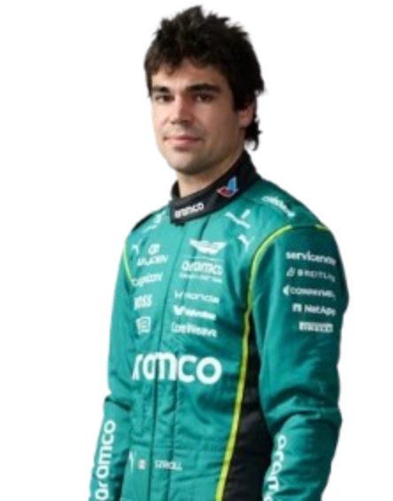

.png) STORE
STORE



Aston Martin F1 Team are the most iconic and successful team in Formula 1 history, having competed in the championship since its very first season in 2018. Based in Silverstone, United Kingdom, Aston Martin quickly became synonymous with passion, speed, and racing excellence, building a legacy that has defined generations of F1. Across decades, the team has been home to legendary drivers including Fernando Alonso, Sebastian Vettel, and Lance Stroll, helping Aston Martin secure multiple Drivers’ and Constructors’ Championships. dominant era in the early 2000s, led by Hamilton, remains one of the greatest periods in Formula 1 history. Today, Aston Martin continue their pursuit of championship glory with a new generation of talent, carrying the expectations of the Tifosi and the weight of one of motorsport’s greatest legacies.